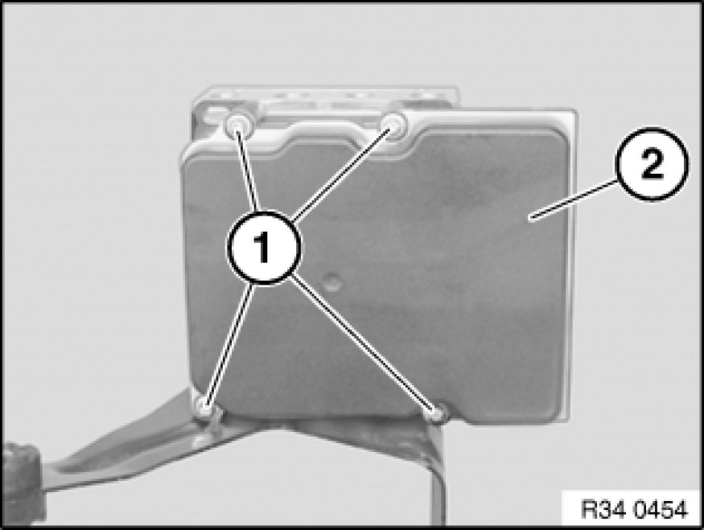
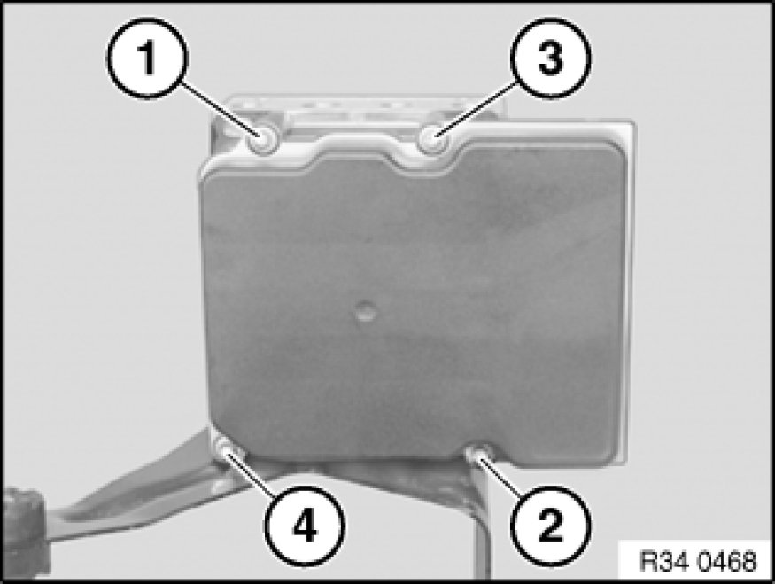

Removing and Installing/Replacing DSC Control Unit
34 52 516 - Removing and installing/replacing DSC control unit

Important!
Read and comply with notes on protection against electrostatic damage (ESD protection) 61 35 ... Notes on ESD Protection (Electro Static Discharge).

Necessary preliminary tasks:
- Remove hydraulic unit Removing and Installing/Replacing DSC Hydraulic Unit

Release screws (1) and carefully detach control unit (2) towards front.
Important!
Risk of damage to the contacts when removing and installing the hydraulic unit.

Installation Note:
Keep sealing faces clean.
Replace screws.
Observe tightening sequence (1-4).
Tightening torque 34 51 1AZ 34 51 Slip Control System (ABS, ASC+T, DSC)

Replacement:
- Carry out programming/coding Programming and Relearning
- Adjustment of steering angle sensor
- Mix-up check of brake lines
- Function check, hydraulic unit